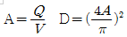
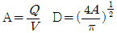
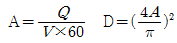
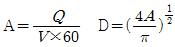
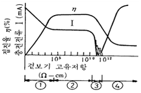

환경기능사 (2002-01-27 기출문제)
1과목: 대기오염방지
1. 1000m3/분의 배출가스를 여과집진시설을 이용하여 겉보기 여과속도 1cm/sec로 처리하고자 할 때 필요한 filter bag의 수량은? (단, filter bag 사양 : 반지름 78㎜, 유효길이 3m)
- 829개
- 1134개
- 2284개
- 3802개
(정답률: 57%)
2. 대기오염공정시험방법 중 굴뚝 등에서 배출되는 배출가스 중 질소산화물(NO＋NO2)을 분석하는데 사용되는 분석방법은?
- 페놀 디솔폰산법
- 중화 적정법
- 침전 적정법
- 아르세나조 Ⅲ 법
(정답률: 64%)

3. 배출가스량과 이동속도를 감안하여 닥트의 단면적과 관경을 산정하는 공식은? (단, A=관의 단면적 m2, Q=배출가스량 m3/min, V=닥트 내 유속 m/sec, D=닥트의 직경 m)




(정답률: 46%)
4. 전기 집진장치에서 먼지의 고유저항과 집진율을 나타낸 다음 그림에서 ①~④ 영역을 바르게 짝지은 것은?

- 재비산 - 정상 - 스파크 빈발 - 역전리
- 정상 – 스파크 빈발 - 역전리 - 재비산
- 스파크 빈발 - 역전리 - 재비산 - 정상
- 역전리 - 재비산 - 정상 – 스파크 빈발
(정답률: 69%)
5. 자동차에서 배출되는 대기오염 물질 중 탄화수소(HC)가 가장 많이 배출되는 곳은?
- 배기관(muffler)
- 기화기(carbureter)
- 연료탱크(fuel tank)
- 크랭크케이스(crank case)
(정답률: 72%)
6. 다음 중 유기염소 화합물이 아닌 것은?
- 염화에틸렌
- 클로로포름
- 사염화탄소
- 포름알데히드
(정답률: 51%)
7. 다음 중 분자량이 가장 큰 기체는?
- CO2
- H2S
- NH3
- SO2
(정답률: 71%)
8. 다음 중 광화학 스모그를 발생시키는 원인물질이 아닌 것은?
- 질소산화물
- 탄화수소
- 자외선
- 먼지
(정답률: 56%)
9. 런던형스모그에 관한 설명과 가장 거리가 먼 것은?
- 아침 일찍 발생한다.
- 겨울에 주로 발생한다.
- 복사형 역전 형태이다.
- 산화가 주된 화학반응이다.
(정답률: 66%)
10. 감압 또는 진공이라 함은 따로 규정이 없는 한 몇 mmHg 이하를 뜻하는가?
- 15
- 20
- 25
- 30
(정답률: 60%)
11. 다음 물질 중 자기연소(내부연소)를 할 수 있는 물질은?
- 석탄
- 휘발유
- 니트로글리세린
- 에틸알콜
(정답률: 56%)
12. 원심력 집진장치의 특성을 설명한 것 중 틀린 것은?
- 운전비용이 적게 들고 특히 고온가스 처리가 가능 하다.
- 구조가 간단하며, 취급이 용이하다.
- 관경이 클수록 미세입자 분리에 유리하다.
- 고함진 가스처리에 유리하고 집진율도 높다.
(정답률: 50%)
13. 다음 오염가스 중 자극성과 질식성이 있으며 적갈색을 나타내는 가스는?
- SO2
- HF
- Cl2
- NO2
(정답률: 39%)
14. 다음에 열거한 연료 중에서 탄소와 수소의 비(C/H ratio)가 가장 작은 연료는?
- 중유
- 휘발유
- 경유
- 등유
(정답률: 68%)
15. 어떤 집진장치 2개가 직렬로 연결되어 있을 때 1차 집진 장치에서 90%, 2차 집진장치에서 95%의 집진효율이라면 총집진효율은 얼마(%)인가?
- 97.5%
- 98.5%
- 99.5%
- 99.9%
(정답률: 59%)
2과목: 폐수처리
16. 유입하수량이 1000m3/일 이고, 침전지의 용적이 250m3일 때, 이 침전지의 체류시간은?
- 2시간
- 4시간
- 6시간
- 8시간
(정답률: 42%)
17. 폭기조의 크기가 450m3, 폭기조 내의 부유물농도 2,000mg/ℓ이라면 MLSS 양은 얼마인가?
- 450Kg MLSS
- 200Kg MLSS
- 900Kg MLSS
- 550Kg MLSS
(정답률: 51%)
18. 하수고도처리공법중 인(P)성분만을 주로 제거하기 위하여 고안된 공법으로 가장 알맞은 것은?
- Bardenpho 공법
- Phostrip 공법
- A2/0 공법
- UCT 공법
(정답률: 60%)
19. 하수관거의 종류 중 맞지 않는 것은?
- 아연강관
- 현장타설 콘크리트관
- 무근 콘크리트관
- 철근 콘크리트관
(정답률: 57%)
20. 어느 공장에서 하천으로 방류된 폐수의 BOD가 15ppm이다. 24시간 하류한 지점에서 BOD는 얼마인가? (단, K1=0.2/day이다.)
- 7.85mg/L
- 8.57mg/L
- 9.46mg/L
- 11.20mg/L
(정답률: 42%)
21. 다음 중 일반적으로 응집원리를 이용하여 처리하지 않는 것은?
- 색도
- 탁도
- 콜로이드
- 탄산염
(정답률: 45%)
22. 염소를 이용하여 살균할 때 주입된 염소와 남아있는 염소와의 차이를 무엇이라 하는가?
- 클로라민
- 유리염소
- 잔류염소
- 염소요구량
(정답률: 56%)
23. 농황산의 비중이 약1.84, 농도는 75% 정도라면 이 농황산의 몰농도(mole/L)는? (단, 농황산의 분자량은: 98)
- 10
- 12
- 14
- 16
(정답률: 47%)
24. 상수도의 정수처리장에서 정수처리의 일반적인 순서는?
- 침전 - 여과 - 염소소독
- 침전 - 소독 - 여과
- 여과 - 활성슬러지처리 - 염소소독
- 여과 - 염소소독 - 응집침전
(정답률: 62%)
25. 지하수의 일반적 특징으로 잘못된 것은?
- 유속이 느리다.
- 국지적인 환경조건의 영향을 적게 받는다.
- 세균에 의한 유기물분해가 주된 생물작용이다.
- 연중 수온이 거의 일정하다
(정답률: 70%)
26. 하(폐)수 처리장에서 많이 채택하고 있는 중력식 농축조에 관한 설명이다. 가장 바르게 서술한 것은?
- 슬러지의 유기물 함량이 높을수록 농축효율이 높아진다.
- 슬러지의 온도가 높을수록 고형물 회수율이 증가한다.
- 주로 1차침전지 슬러지 농축을 위하여 많이 채택한다.
- 중력농축조의 장점은 구조가 간단하고 운전비용이 저렴하다는 것이다.
(정답률: 43%)
27. 완충용액을 알맞게 나타낸 것은?
- 보통 약산과 그 약산의 강염기의 염을 함유한 용액
- 보통 약산과 그 약산의 약염기의 염을 함유한 용액
- 보통 강산과 그 강산의 강염기의 염을 함유한 용액
- 보통 강산과 그 강산의 약염기의 염을 함유한 용액
(정답률: 48%)
28. 폐수처리장 최종방류수에 5mg/L의 염소를 방류량에 기초 하여 주입하고자 한다. 만약 이 평균 유량이 25000m3/day이고 일 최대유량이 평균유량의 1.5배라고 하면 처리장에서 구입해야 할 염소주입장치의 용량은?
- 80kg/day
- 120kg/day
- 160kg/day
- 200kg/day
(정답률: 28%)
29. 고도처리의 제거대상물질과 제거방법의 연결이 잘못된 것은?
- 질소(N) - 질산화와 탈질산화
- 중금속 - 활성탄 흡착 또는 화학적 응결
- 인(P) - 규조토 여과
- NH+4 - pH 조정 후 탈기
(정답률: 63%)
30. 다음 중 경도유발물질이 아닌 것은?
- K
- Ca
- Mg
- Fe
(정답률: 55%)
31. 분자량이 94인 페놀(C6H5OH) 500mg/L의 이론적인 COD(mg/L)는 얼마인가?
- 594
- 1191
- 1592
- 2838
(정답률: 51%)
32. 알칼리도에 관한 설명으로 틀린 것은?
- 산이 유입될 때 이를 중화시킬 수 있는 능력의 척도 이다.
- 알칼리도는 물에 알칼리를 주입, 소모된 알칼리물질의 양을 환산한 값이다.
- 알칼리도 유발물질로는 수산화물, 중탄산염, 탄산염 등이 있다.
- 메틸오렌지알칼리도와 총알칼리도는 같은 의미이다.
(정답률: 38%)
33. pH가 3.5인 용액의 [H+]는 몇 mole/L인가?
- 2.36 × 10-4
- 2.86 × 10-4
- 3.16 × 10-4
- 3.46 × 10-4
(정답률: 54%)
34. 폭이 10m, 길이가 50m, 깊이가 4m인 장방형 침사지가 있다. 이 침사지에서 100% 제거되는 입자군의 침강속도는 몇 cm/sec인가? (단, 유량은 6480m3/day이다.)
- 0.045cm/sec
- 0.035cm/sec
- 0.025cm/sec
- 0.015cm/sec
(정답률: 24%)
35. 산화(oxidation)반응의 개념으로 잘못된 것은?
- 산소와 화합하는 현상
- 수소화합물에서 수소를 잃은 현상
- 전자를 받아들이는 현상
- 원자가가 증가되는 현상
(정답률: 57%)
3과목: 폐기물처리
36. 폐기물 처리에 있어서 열분해를 통한 연료의 성질을 결정 하는 요소와 관계없는 것은?
- 가열속도
- 폐기물형상
- 운전온도
- 폐기물조성
(정답률: 56%)
37. 무기성고형화에 대한 설명과 가장 거리가 먼 것은?
- 다양한 산업폐기물에 적용이 가능하다.
- 방사선폐기물을 제외한 기타 폐기물에 대한 적용 사례가 제한되어 있다.
- 수용성이 작고 수밀성이 양호하다.
- 상온 및 상압하에서 처리가 가능하며 처리가 용이하다.
(정답률: 40%)
38. 압축기에 플라스틱을 넣고 압축시킨 결과 부피의 감소율이 80%였다면 압축비는?
- 5
- 4
- 3
- 2
(정답률: 44%)
39. 총고형분이 70000ppm인 산업폐기물 100m3를 매립 시 이중 휘발성 고형물이 50% 이었다면 LFG(m3)은? (단, LFG = 메탄, 메탄 발생량은 VS kg당 0.5m3 발생 한다고 가정함)
- 980
- 1240
- 1530
- 1750
(정답률: 28%)
40. 다음 매립방법에 대한 설명 중 틀린 것은?
- 폐기물을 고밀도로 매립하는 것이 매립지의 수명을 길게 한다.
- 폐기물 매립 시 매일 복토하는 것이 좋다.
- 샌드위치 방식이나 셀방식은 복토를 하지 않는 방식 이다.
- 단순 투입방식은 고밀도 매립을 기대할 수 없다.
(정답률: 51%)
41. 발열량이 상당히 높은 폐기물의 소각처리 시 소각로 연소 실내의 연소가스와 폐기물의 흐름 형식으로 가장 적절한 것은?
- 교류식
- 병류식
- 회류식
- 향류식
(정답률: 35%)
42. 쓰레기의 저위발열량을 측정하기 위한 방법과 가장 거리가 먼 것은?
- 추정식에 의한 방법
- 단열열량계에 의한 방법
- 원소분석에 의한 방법
- 직접연소에 의한 방법
(정답률: 40%)
43. 유기성 폐기물의 퇴비화 조작에서 환경변화인자가 아닌 것은?
- 온도
- pH
- 탄소/질소율(C/N ratio)
- 질소/인(N/P ratio)
(정답률: 52%)
44. 독성유기물질을 흡착에 의하여 처리할 때 흡착제(absorbent)의 성질을 좌우하는 인자가 아닌 것은?
- 기공구조와 크기분포
- 비표면적
- 입도
- 입자의 응집성
(정답률: 28%)
45. 일평균 10,000kg의 폐기물을 발생하는 지역을 수거 인부 5명이 매일 5시간의 수거시간 동안 작업하여 수거하고 있다. 이때의 수거효율을 MHT 단위로 계산하고 옳은 답을 아래에서 고르면?
- 400MHT
- 0.025MHT
- 2.5MHT
- 10,000MHT
(정답률: 53%)
46. 매립 시에 사용하는 연직차수막에 관한 설명으로 알맞지 않은 것은?
- 수평방향의 차수층 존재 시에 사용된다.
- 지하수 집배수시설이 필요하다.
- 단위면적당 공사비가 비싸다.
- 차수성 확인이 어렵다.
(정답률: 31%)
47. 폐기물 파쇄에 작용하는 힘의 종류라 볼 수 없는 것은?
- 압축작용
- 충격작용
- 전단작용
- 인장작용
(정답률: 70%)
48. 반고상 폐기물의 고형물함량으로 알맞은 것은?
- 5% 이상 15% 미만
- 10% 이상 25% 미만
- 15% 이상 25% 미만
- 20% 이상 30% 미만
(정답률: 64%)
49. 쓰레기를 파쇄 처리하는 이유로 틀린 것은?
- 밀도의 감소
- 입자크기의 균일화
- 유기물이 분리
- 비표면적의 증가
(정답률: 36%)
50. 소각로의 연소온도를 높이기 위한 방법으로 옳지 않는 것은?
- 높은 발열량의 연료사용
- 과잉공기량의 과다주입
- 연료의 예열
- 연료의 완전연소
(정답률: 71%)
51. 쓰레기의 성상분석을 위한 시료채취법이 아닌 것은?
- 원추4분법
- 교호삽법
- 구획법
- 피라미드법
(정답률: 69%)
52. 폐기물재이용상의 문제점에 대한 설명과 거리가 먼 것은?
- 폐기물 재생제품의 값이 낮다.
- 확실한 시장성이 결여되어 있다.
- 폐기물의 조직적인 수집체계가 결여되어 있다.
- 폐기물의 성상의 다양화가 결여되어 있다.
(정답률: 35%)
53. 매립초기 호기성단계에서 매립지에서 가장 많이 발생하는 가스는?
- 수소가스
- 메탄가스
- 질소가스
- 이산화탄소 가스
(정답률: 49%)
54. 수거인부가 집안에 들어와 직접 쓰레기통에서 쓰레기를 수거하여 가는 형태는?
- Alley
- Set out
- Backyard carry
- set out-set back
(정답률: 60%)
55. 분뇨의 물리화학적 특성과 가장 거리가 먼 것은?
- 외관상 황색에서 다갈색이며, 점성의 반고체이다.
- 비중은 0.9 이하이고, 점도는 1.2-2.2 정도이다.
- 질소성분이 많이 포함되어 있다.
- 분뇨의 질은 발생지역에 따라서 그 차이가 크다.
(정답률: 46%)
4과목: 소음 진동학
56. 항공기 소음이 큰 피해를 주는 이유에 관한 기술 중 틀린 것은?
- 간헐적이고 충격음이다.
- 발생음량이 많고 금속성 저주파음이다.
- 상공에서 발생하기 때문에 피해 면적이 넓다.
- 활주로에서 1km 떨어진 곳에서 약 100dB을 나타낸다.
(정답률: 42%)
57. 암진동의 영향을 받지 않는 것은 대상기계가 가동시와 중지시의 레벨차가 몇 dB 이상의 경우인가?
- 5
- 7
- 9
- 10
(정답률: 41%)
58. 사람이 느끼는 최소진동치(㏈)로 가장 알맞은 것은?
- 40 ± 5
- 45 ± 5
- 50 ± 5
- 55 ± 5
(정답률: 53%)
59. 방진고무의 일반적인 성질로 볼 수 없는 것은?
- 고무자체의 내부마찰에 의해 내부저항이 최소화되어 저주파 진동 차진에 효과적이다.
- 형상을 비교적 자유롭게 할 수 있다.
- 공기 중의 오존에 의해 산화된다.
- 스프링정수는 재질 및 형상에 따라 광범위하게 선택할 수 있다.
(정답률: 37%)
60. 30℃ 공기 중의 반자유공간(반사율이 1인 지면)상에 놓여 있는 무지향성 점음원으로 부터 15m 떨어진 점의 음압 진폭이 3×10-2N/m2일 때 이점에서의 음압도는?
- 약 61dB
- 약 67dB
- 약 73dB
- 약 78dB
(정답률: 20%)